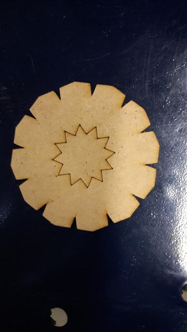

Computer Controlled Cutting
Laser Cutting
Making 2D design: For laser cutting something we need to make a 2D design
- Software available for 2D design:
- AutoCAD
- Adobe Illustrator
- Inkscape
- SketchUp
- SolidWorks
- OnShape
- SolveSpace
- Solid Edge 2D
- Format of file: The format of all files in the Laser Cutting Machine is (.dxf) form. So we need to convert all the files in .dxf form
- Choosing the Material: It is necessary to choose a specific material bacause if we take any material then there are possibilities that the material is not cut properly or it may damage the machine.
- checking power operations: Check the power switchis are on or not. You need to switch on the Exhaust switch , power switch and the main switch of the machine
- The laser goes to (0,0) point and comes back.
- open in supported software: We need to open file in the software supported by the machine
- Lload the file
- checking the dimentions once again
- setting power and speed
- switching on machine, exhaust, then main switch of machine , and laser
- clicking download file option . You will receive "download file success
- setting up the focus
- Z-axis process: This process is done for adjusting the nozel at right place. It is necessary to focus the laser at right place. For this a lense is used and the Laser is focused according to that.
- select file and frame: This will frame the points in the materisl in which laser will cut the piece
- check once again and start the machine
- I have worked in AutoCAD and Laser Cut the piece given below:
